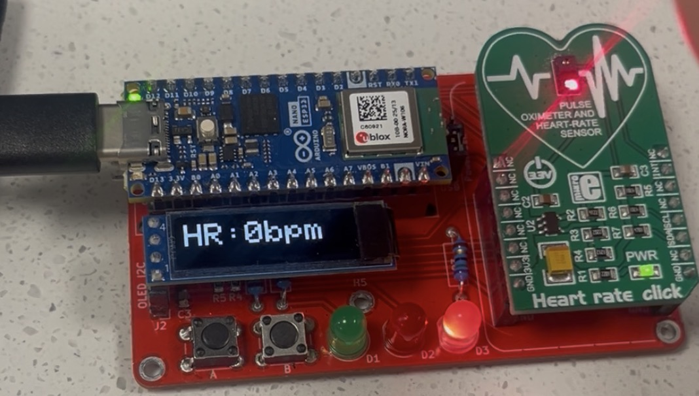
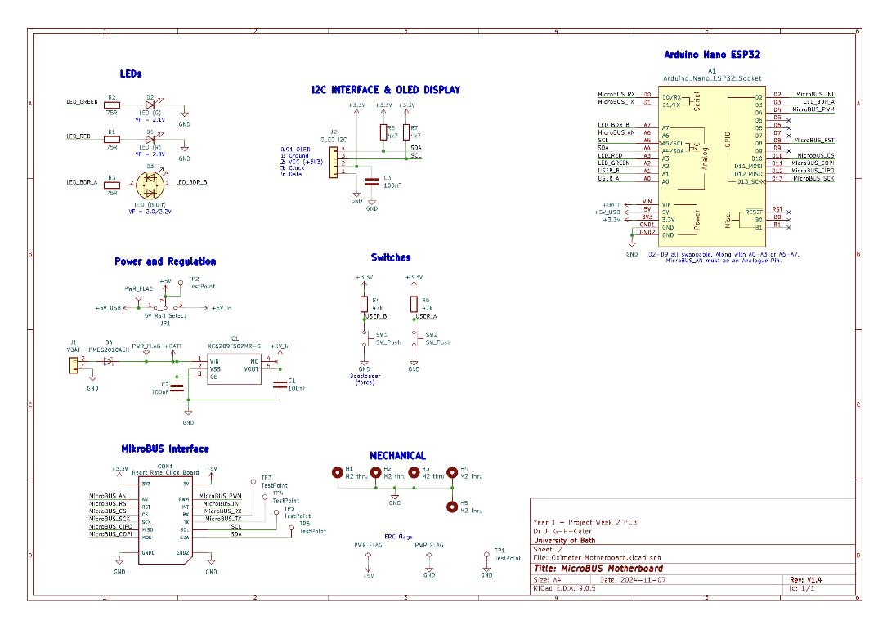

Digital Health Monitoring
Introduction
The aim of this project week is to design, build, and test a pulse oximeter, and produce an accompanying datasheet.
Time Management
Gantt Chart

Circuit Simulation
Aim of the Simulation Analysis
The aim of this simulation is to evaluate the effectiveness of the signal-conditioning circuit used for heart-rate detection with an LDR. Two sine wave sources were used at the input: one representing the desired heart-rate signal at 1.2 Hz (72 BPM), and another representing high-frequency noise (>50 Hz). The circuit consists of three cascaded low-pass filters followed by an operational amplifier. The expected outcome is that the low-pass filters significantly attenuate the high-frequency noise while preserving the low-frequency heart-rate signal, which is then amplified by the op-amp for easier detection and processing.
Meaning of the Simulation Results
The simulation results confirm that the signal-conditioning circuit performs as intended. The red waveform represents the unfiltered LDR output signal, which contains the desired heart-rate component at 1.2 Hz (72 BPM) superimposed with significant high-frequency noise above 50 Hz. In the time domain, this noise dominates the signal and makes the heart-rate component difficult to observe.
After passing through the three cascaded low-pass filter stages and the operational amplifier, the output signal (purple waveform) shows a substantial reduction in high-frequency noise. The low-frequency heart-rate signal is preserved and becomes clearly visible as a smooth periodic waveform. The op-amp stage increases the amplitude of this filtered signal, improving its suitability for further processing or peak detection.
This behaviour is further validated in the frequency domain. The spectrum of the unfiltered signal exhibits strong high-frequency components, while the filtered output shows significant attenuation of these components and a dominant peak at approximately 1.2 Hz, corresponding to the simulated heart rate. Overall, the results demonstrate that the low-pass filters effectively suppress unwanted high-frequency noise while maintaining the integrity of the heart-rate signal, confirming that the circuit meets its intended design objectives.
FFT Result

Simulation Circuit Schematic
.png.1)
Simulation Results

Circuit Design
Schematic and photo of prototype


Physical system


Arduino code
Video demonstration
Datasheet
Technical Report
Embedded Systems Design
The project involves the development of a microcontroller-based pulse oximeter system designed to measure and display heart rate and blood oxygen saturation (SpO₂) in real time. The system uses a MAX30100 optical sensor to detect changes in blood volume, an Arduino-compatible microcontroller for data processing, and an OLED display to present the measured values to the user. Additional features such as push-button input and LED indicators are included to improve usability and provide visual feedback.
The Arduino program is structured around the standard setup() and loop() functions. In setup(), serial communication is initialised for debugging, the MAX30100 pulse oximeter and OLED display are configured using I²C communication, and all input and output pins are defined. If either the sensor or display fails to initialise, the program halts to prevent incorrect operation.
Within the loop() function, the pulse oximeter is continuously updated using a non-blocking approach. Heart rate and SpO₂ values are read at fixed time intervals using the millis() timer, allowing the program to remain responsive to user input. Two push buttons are read using software debouncing logic to avoid false triggering, enabling the user to cycle through multiple display modes.
Separate functions are used to update the OLED display and control the status LEDs, improving code readability and modularity. Conditional statements are used to evaluate heart rate thresholds and provide visual feedback via LEDs.
Life cycle assessment of electronics devices
Product considered for LCA: Dual-Wavelength Pulse Oximeter
Birth of the produce:
The birth of the electronic device begins with the extraction and processing of raw materials used in its components. The system consists primarily of an Arduino Nano, optical sensors, passive electronic components, LEDs, and an OLED display and a printed circuit board (PCB). These components rely on materials such as silicon for integrated circuits, copper for wiring and PCB traces, aluminium for component housings, and rare earth elements used in semiconductor fabrication. The extraction and refinement of these materials are energy-intensive processes that contribute significantly to CO₂ emissions, particularly in silicon wafer production and metal smelting.
Manufacturing processes such as PCB fabrication, surface-mount assembly, and semiconductor packaging require high-temperature processing and clean-room environments, further increasing energy consumption. Additionally, global transportation of components from manufacturing facilities to assembly locations adds to the overall carbon footprint.
Life of the produce:
During its operational life, the device has a relatively low environmental impact compared to its manufacturing phase. The system is designed for intermittent, low-power use and is typically powered via a USB supply or small external power source. The Arduino, sensor module, and OLED display consume minimal electrical power, resulting in a small ongoing CO₂ contribution associated with electricity generation.
No consumable resources are required during normal operation, and the device does not produce emissions during use.
The overall carbon footprint during this phase depends largely on duration of use and the energy mix of the electricity supply.
End of life:
The device’s primary constituents - the Arduino Nano, MAX30100 sensor, and OLED display - are integrated in a manner that allows them to be removed at the end of the product’s life. These components are mounted using soldered pin headers rather than being permanently soldered to the PCB, enabling straightforward removal and potential reuse in future projects. This design choice reduces electronic waste and lowers the overall environmental impact by extending the functional lifespan of higher-value electronic components.
The remaining components, including passive components and fixed wiring, are soldered directly onto the PCB and are therefore not intended for reuse. At the end of the device’s life, the PCB should be disposed of through appropriate electronic waste recycling channels. Recycling allows recovery of materials such as copper and other metals, reducing the demand for new raw material extraction and associated CO₂ emissions. While recycling processes consume energy, they typically result in a lower carbon footprint than manufacturing new electronic components from raw materials.
Skills mapping
GenAI Acknowledgement
GenAI was not used in the preparation of this assignment.
Skills Claimed
- Circuit design & realisation — claimed at I am claiming this skill at ApplicationPlace feedbackCloseFeedback - Annotation: Circuit design & realisationClosePlace feedback
- Circuit simulation — claimed at I am claiming this skill at ApplicationPlace feedbackCloseFeedback - Annotation: Circuit simulationClosePlace feedback
- Embedded systems design — claimed at I am claiming this skill at ApplicationPlace feedbackCloseFeedback - Annotation: Embedded systems designClosePlace feedback
- Technical report writing — claimed at I am claiming this skill at ApplicationPlace feedbackCloseFeedback - Annotation: Technical report writingClosePlace feedback
- Life cycle assessment of electronic devices — claimed at I am claiming this skill at ApplicationPlace feedbackCloseFeedback - Annotation: Life cycle assessment of electronic devicesClosePlace feedback
- Datasheet creation — claimed at I am claiming this skill at ApplicationPlace feedbackCloseFeedback - Annotation: Datasheet creationClosePlace feedback
- Effective time management — claimed at I am claiming this skill at ApplicationPlace feedbackCloseFeedback - Annotation: Effective time managementClosePlace feedback